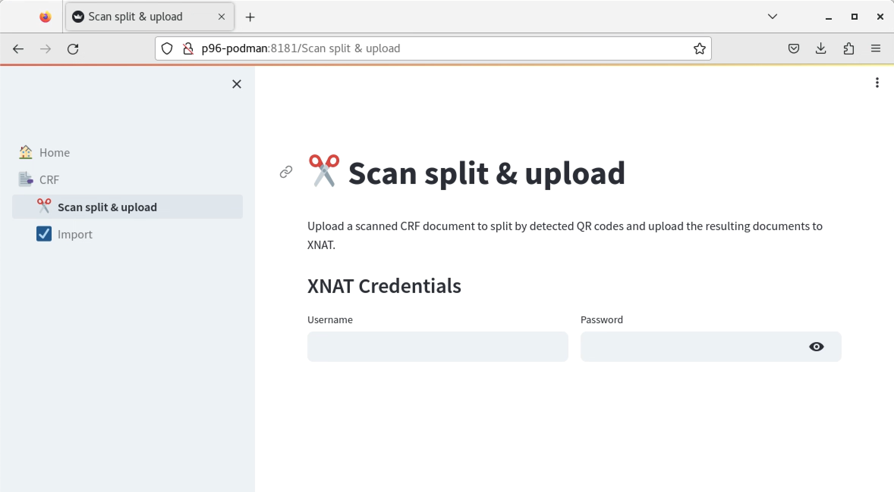
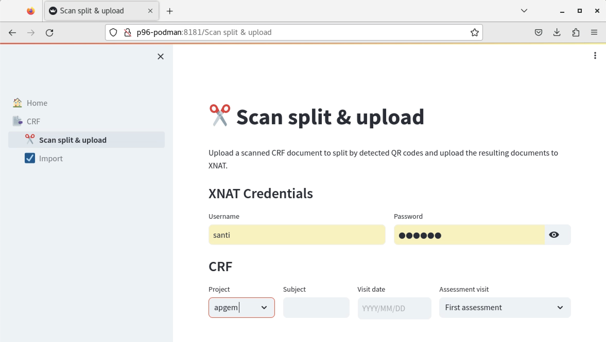
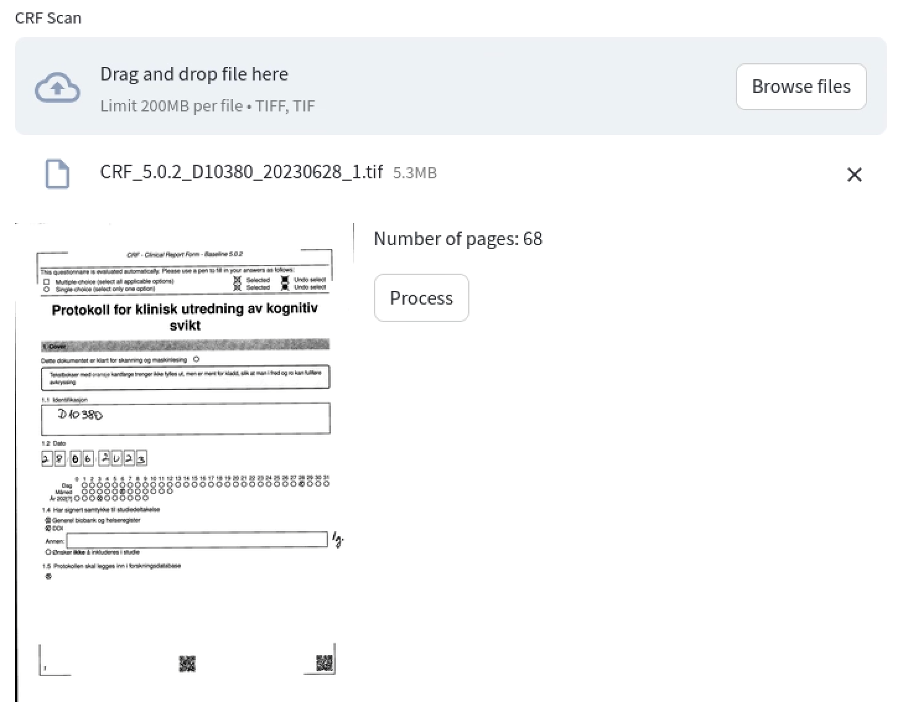
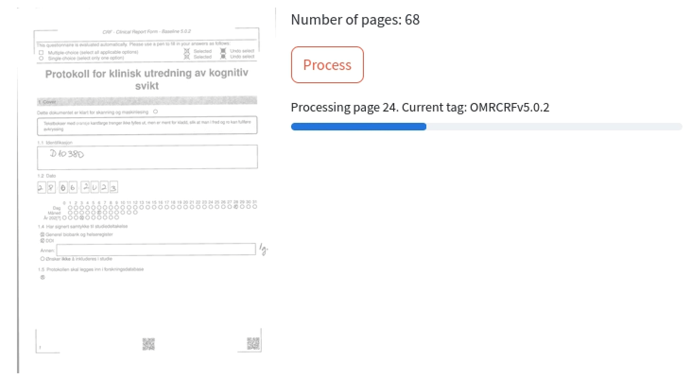
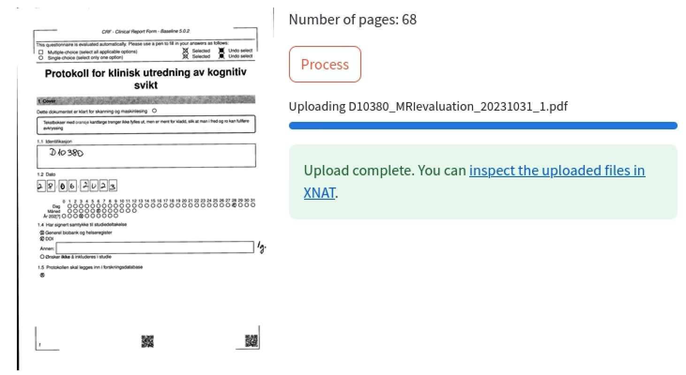
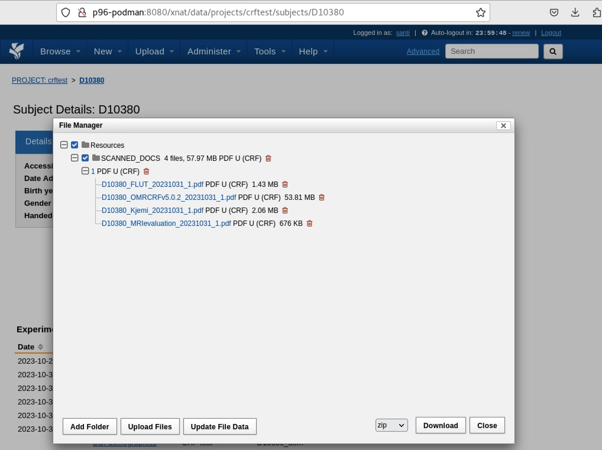

CRF Splitter & Upload Tool User Documentation
The CRF Splitter is an app designed to upload scanned documents related to a patient visit (such as main CRF, MRI report, tests, etc.), split them by detected QR codes, and upload the resulting separate documents to XNAT.
ℹ️ The CRF Split & Upload tool only processes the actual scanned document to upload the associated scans to the XNAT subject. This tool doesn't create any experiments and associated data in XNAT
Step 1: Import the scanned document into TSD
The very first step consists in uploading the file into TSD for it to become available in our servers. See the user guide for importing files in case of any doubts.
Step 2: Access the Application
- Navigate to the DDI Tools web portal by entering
http://p96-podman:8181in your web browser. - Select the "✂️Scan split & upload" option from the left navigation panel.

Step 3: Log In to XNAT
- Input your XNAT username and password in the appropriate fields.
- Press Enter to proceed.
Step 4: Complete the CRF Form
- Project: Select the desired XNAT project from the dropdown list.
- Subject: Type in the subject identifier (the subject should already exist in the chosen project).
- Visit Date: Use the calendar tool to select the date of the assessment visit.
- Assessment Visit: Pick the type of assessment visit from the dropdown menu.

Step 5: File Upload and Processing
- Click the "Browse files" button to choose a scanned CRF document in TIFF format.
- Review the page count and first page preview that appear after the file upload.

- Initiate the splitting and upload operation by clicking the "Process" button.

Step 6: Confirm Upload Status
- Verify the success message that appears upon completion, which includes a link to the uploaded files in XNAT.

Step 7: Inspect Uploaded Files in XNAT
- Click the provided link to go to the XNAT subject page.
- Select the
Manage Filesaction.
- Locate your uploaded documents in the SCANNED_DOCS folder, organized by visit.

By following these steps, you should be able to successfully upload and manage your scanned CRF documents.